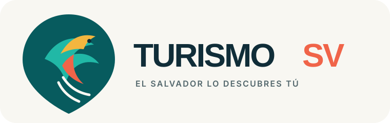
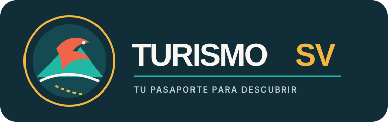
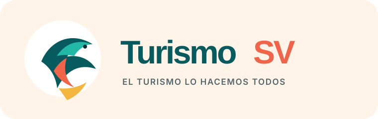

A. Torogoz Ruta
El torogoz se integra en un pin de ubicación; su cola dibuja el movimiento de una ruta. Es la opción más flexible y reconocible como producto digital.
Exploración de marca · Agosto 2026
Tres rutas originales para TurismoSV. Buscamos una marca reconocible, comunitaria y preparada para web, redes, sellos de verificación y una futura aplicación.

El torogoz se integra en un pin de ubicación; su cola dibuja el movimiento de una ruta. Es la opción más flexible y reconocible como producto digital.

Una insignia de exploración que reúne ave, volcán, paisaje y recorrido. Tiene carácter coleccionable para check-ins y recompensas.

Las piezas de color forman un torogoz y simbolizan las contribuciones de viajeros, residentes y comercios.